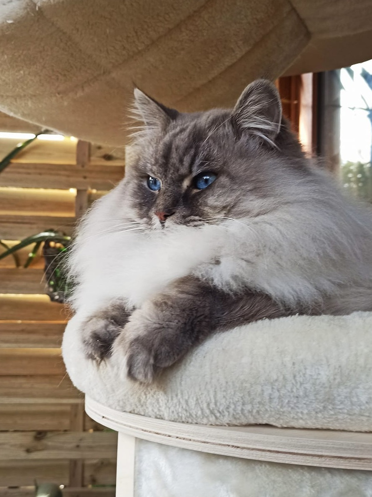
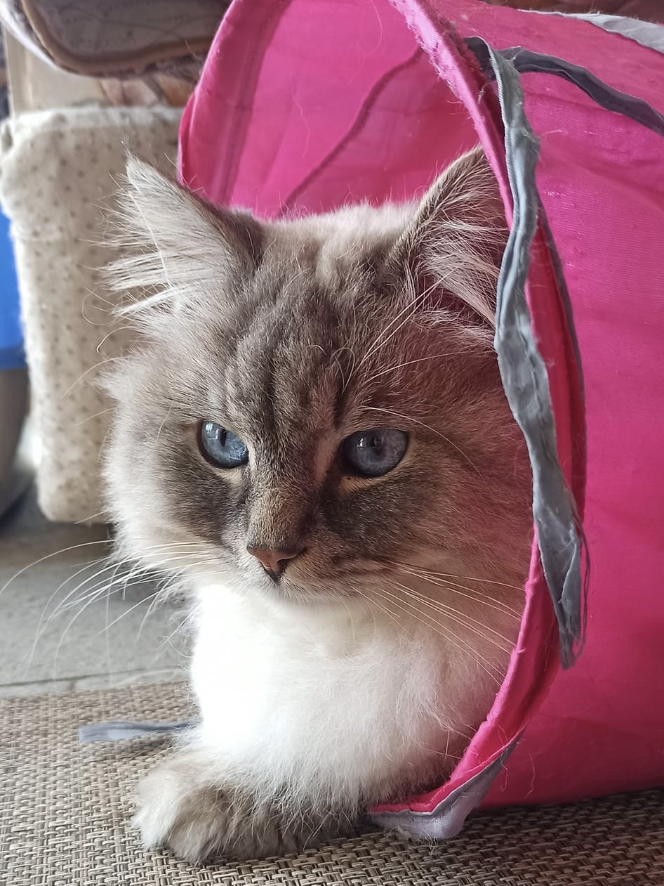
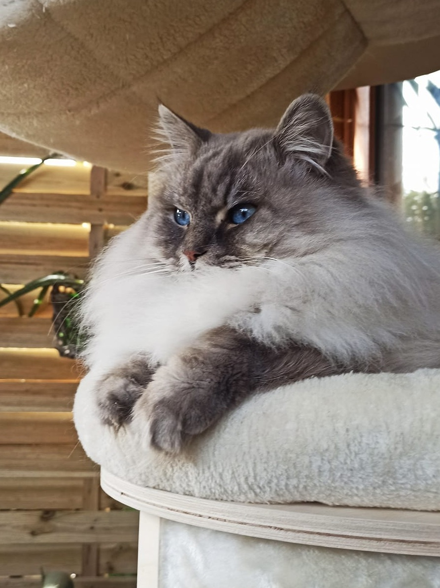
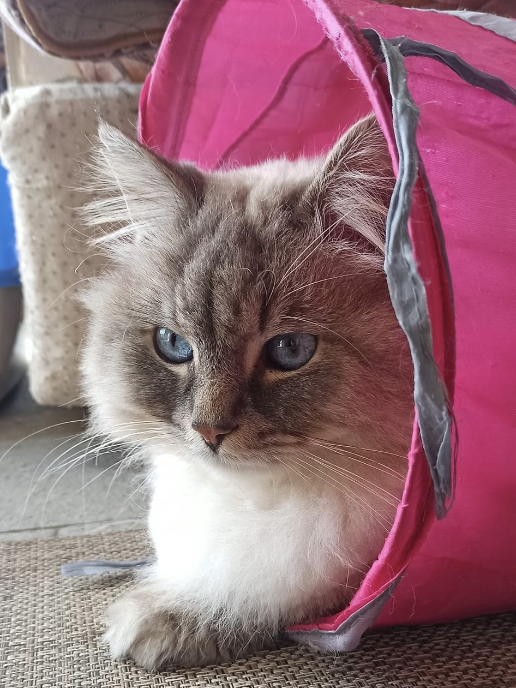

di Gatti Siberiani
 





Chi Sono

Benvenuti nel mondo di "A-mici di Chiara", dove i gatti Siberiani sono al centro di tutto.
Mi chiamo Chiara e sono un'appassionata amante del mondo animale, ma i miei gatti Siberiani sono il mio mondo.
Da oltre due anni mi dedico con amore e dedizione all'allevamento di questa straordinaria razza, che ho imparato a conoscere grazie alla mia prima gatta, Princy.
L'esperienza con lei mi ha insegnato l'importanza di un ambiente sereno e familiare per lo sviluppo equilibrato dei cuccioli.
I miei gatti vivono con me, liberi di esplorare e interagire, il che favorisce il loro temperamento docile e affettuoso.
"A-mici di Chiara" non è solo un allevamento, è una famiglia dove i cuccioli crescono felici, pronti per portare gioia e compagnia nelle nuove case.
Offro supporto continuo con foto, video e risposte a tutte le vostre domande, sia prima che dopo l'adozione.
Per me, la qualità e il benessere dei miei gatti sono prioritari, motivo per cui non produco cucciolate su richiesta ma con attenzione e cura.
Se cercate un compagno affettuoso e socievole, adatto sia ai bambini che agli adulti, i miei gatti Siberiani vi aspettano.
Disponibilità
Siamo in attesa della cicogna. Se volete sapere quando arriverà la prossima cucciolata, contattatemi al +39 3936730024 oppure tramite i social indicati qui sotto.
Il mio allevamento, "A-mici di Chiara", è sostenibile e rispettoso della salute dei miei gatti. Le gatte riproduttrici non sono mai forzate, rispettando i loro tempi naturali per garantire il benessere di ogni cucciolo.
Seguitemi sui social per aggiornamenti e per conoscere meglio i miei gatti Siberiani. Non vedo l'ora di aiutarvi a trovare il vostro nuovo amico a quattro zampe!
Contatti
Sono sempre felice di rispondere alle vostre domande e di fornirvi tutte le informazioni necessarie sui miei adorabili gatti Siberiani. Potete contattarmi attraverso diversi canali, scegliendo quello che preferite:
- WhatsApp e Telefonate: +39 3936730024.
- Facebook & Instagram
(A-mici di Chiara) - TikTok: @amici.di.chiara.
Seguitemi per vedere le foto e i video dei miei gatti, per conoscere le novità sulle prossime cucciolate, informazioni, consiglie scoprire di più sulla vita quotidiana del mio allevamento